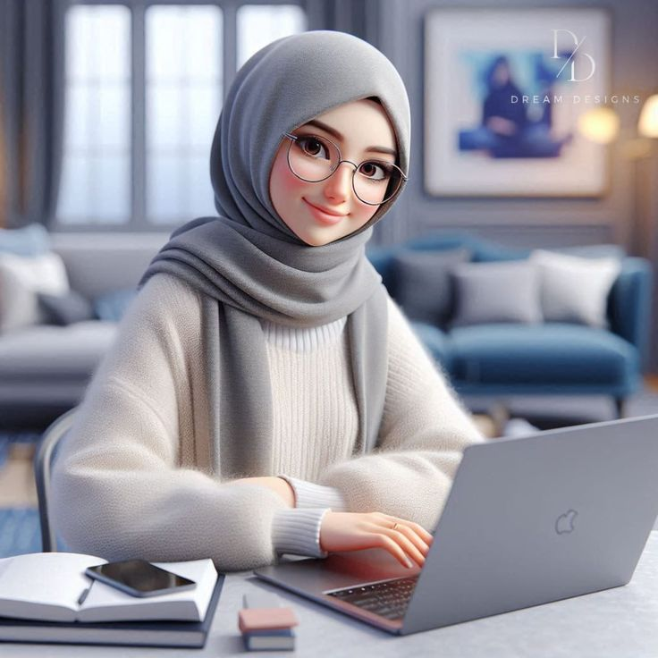

Our Story
This blog was created to celebrate the world of fashion and beauty, offering insights into trends, products, and cultural influences. We believe that fashion is more than clothing—its a language of self-expression. Beauty, meanwhile, is about self-care, confidence, and artistry. Together, they form a lifestyle that empowers individuals to feel authentic and inspired.
Our Vision
Our vision is to provide readers with thoughtful content that blends heritage and modernity. From global runway inspirations to local beauty traditions, we aim to highlight diversity, creativity, and innovation in the industry. Whether youre exploring skincare routines, makeup tips, or fashion trends, this blog is your companion in discovering what makes style truly personal.
Meet the Blogger
Hi, Iam Fatima! With a background in technology and a passion for fashion and beauty, I created this blog to merge creativity with knowledge. I enjoy exploring how trends evolve, how products shape confidence, and how culture influences style. My goal is to share authentic insights and inspire readers to embrace their individuality.
